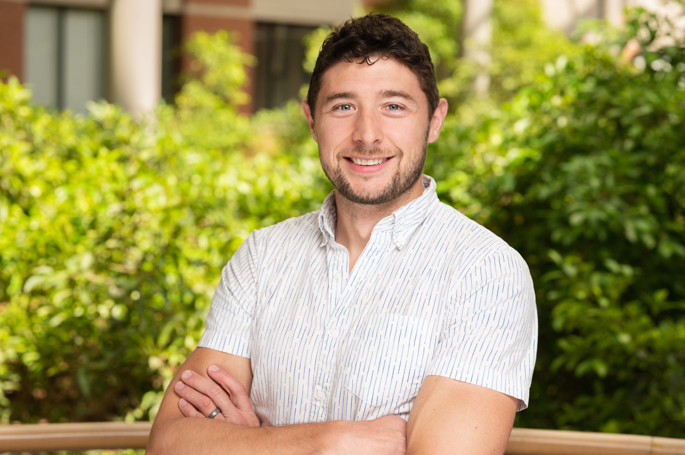
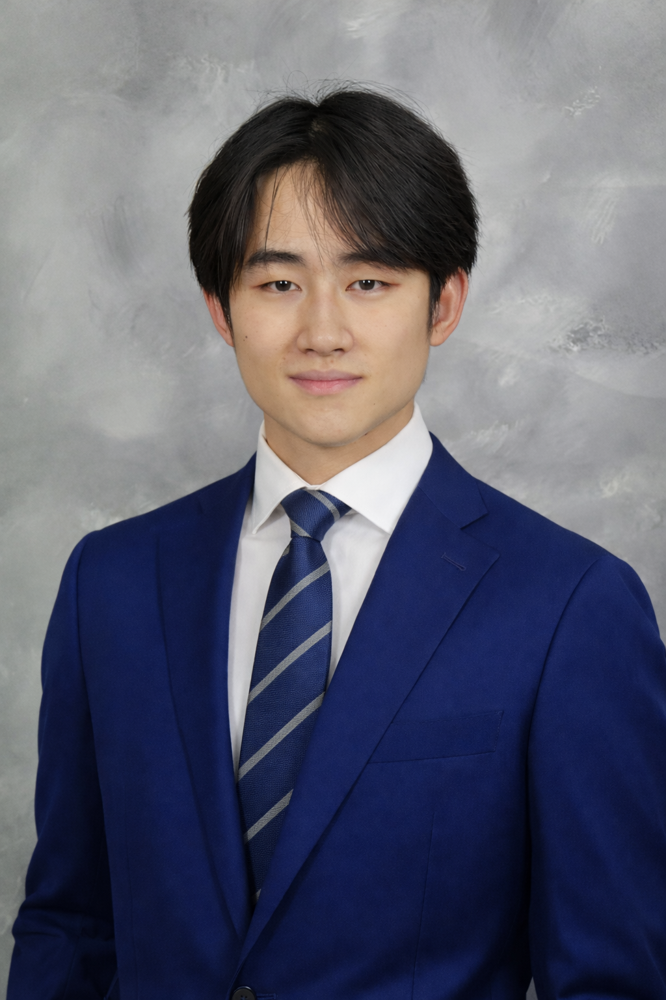
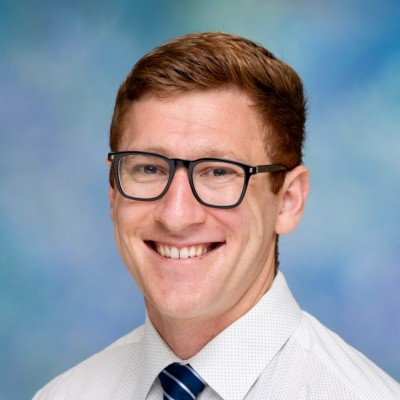

Dr. Stewart J. Russell
Assistant Professor, Molecular & Medical Health Sciences
Department of Health Sciences, Wilfrid Laurier University
Affiliation Scientist, CReATe Fertility Centre
Dr. Stewart J. Russell is an Assistant Professor of Molecular and Medical Health Sciences at Wilfrid Laurier University, commencing August 1, 2025. He completed his PhD in 2016 at the University of Guelph, where he pioneered work on small RNA biology in bovine oocytes and early embryos. Following his PhD, he spent nearly a decade directing translational studies addressing infertility at the CReATe Fertility Centre, where he led research programs spanning single-cell RNA profiling of human embryos (days 3–12), molecular interactions between embryos and endometrium, multiomic analysis of endometrial receptivity, and epigenetic studies of sperm-borne RNAs.
His work leverages small RNA biology, multi-omics analysis, and embryo micromanipulation to develop diagnostic and therapeutic strategies for infertility and early embryo health. He has collaborated on multiple large initiatives to advance the field of ARTs, including novel research on sperm-borne RNAs and endometrial receptivity. Dr. Russell also mentors graduate students and lectures internationally on reproductive biology and precision fertility care.
Graduate Students
Our students are the heart of the lab — driving projects forward with creativity and rigour.
Sheila (Yat Sze) Kwok
PhD Candidate · Institute of Medical Science, University of Toronto · Projected Graduation: July 2026
Investigating single-cell transcriptomics of aneuploid embryo development, exploring how chromosomal abnormalities affect lineage dynamics and cell fate decisions in early human embryos.
Carly Keshen
MSc Candidate · Institute of Medical Science, University of Toronto · Projected Graduation: August 2026
Investigating transcriptomic signatures of recurrent implantation failure using meta-analytic and machine learning approaches. Recipient of the 2025 CGS-M scholarship.
Undergraduate Students
Undergraduate researchers contributing to cutting-edge embryology and computational biology projects.
Eitan Lenga
BSc Candidate · Health Science, Wilfrid Laurier University
Building a computational pipeline to analyze early human embryo single cell RNA sequencing data using RNA Velocity. By comparing spliced and unspliced transcription, I aim to predict future cell states via developmental directionality and identify molecular signatures associated with embryo arrest.
Arsh Verma
BSc Candidate · Health Science, Wilfrid Laurier University
Investigating the role of transposable elements (TE) and alternative splicing events in regulating early human embryonic development and influencing implantation success. Through comparing TE expression in RNA-sequencing data from arrested versus successful embryos at the blastocyst stage, I dissect TE impact on transcriptomic dysregulation and its association with developmental failure.
Eric Chu
BSc Candidate · Honours Health Sciences, Wilfrid Laurier University
Investigating early embryonic development by building an interactive embryo timelapse viewer for the purpose of annotating developmental progression, and developing a convolutional neural network (CNN) pipeline for automated image analysis.
emmanuel-arzoumanidis.jpg
Emmanuel Arzoumanidis
BSc Candidate · Health Sciences, Wilfrid Laurier University
Investigating endometrial samples in the context of recurrent implantation failure (RIF), with the goal of determining whether specific genetic variants may contribute to the RIF phenotype. I am currently developing and applying a standardized bulk RNA-seq analysis workflow to analyze existing data and identify potential variant signals and transcriptomic patterns associated with RIF.
jaylan-tran.jpg
Jaylan Tran
BSc Candidate · Health Sciences, Wilfrid Laurier University
Developing a computational pipeline to analyze genetic variation in early human embryos using single-cell sequencing data. Using Monopogen, I perform single-cell–aware variant calling to generate embryo-level VCF files, which are then filtered and analyzed with PLINK to compute principal component analysis (PCA). Embryo variants are projected onto a 1000 Genomes reference panel to contextualize genetic variation and assess population structure. This workflow helps characterize lineage-level variation and provides a framework for studying genetic dynamics during the earliest stages of embryonic development.

Matthew Shen
Incoming Freshman · Neuroscience, University of Pennsylvania
Building the Digital Embryo, a computational platform that integrates multi-omic single-cell data from human preimplantation embryos into a predictive developmental model. Responsibilities range from running reproducible bioinformatics pipelines on HPC infrastructure to building interactive frontend interfaces for exploring processed results. Current focus is on transcriptome-level preprocessing, metadata harmonization, and visualization tools.
Open Positions
Graduate & Undergraduate
We're recruiting motivated students interested in computational biology and reproductive science. Get in touch →
Alumni
Past members of the lab who have gone on to make their mark in science and beyond.
Tina Tu-Thu Ngoc Nguyen
Department of Physiology, University of Toronto · Graduated August 2024
Investigated endometrial receptivity and implantation failure, comparing and characterizing the endometrial receptive status of women suffering from recurrent implantation failure or thin endometrium, with the goal of developing therapies to improve implantation success in women with implantation failure.

Nicholas Werry
Biomedical Science, University of Guelph · Graduated July 2023
Primarily studied how small non-coding RNAs including miRNAs and piRNAs in bovine sperm correlate with fertilization rates. Research included collaborations investigating semen sales analysis, cryopreservation, and automation of in vitro embryo production.